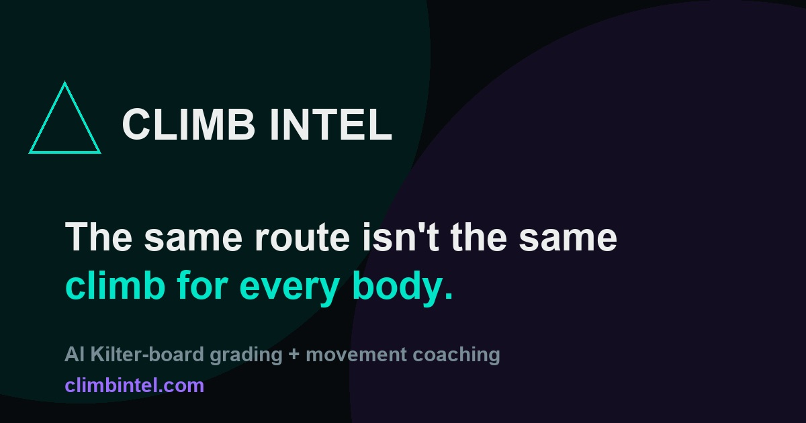

Climb Intel
An app that grades Kilter Board routes and predicts how hard a climb will feel for your body, using your height, wingspan and reach. You can also upload a video of yourself climbing and get feedback on each move.
- 72.8% of grades within ±1 V-grade, ~90% within ±2
- 137,000 graded routes used for training
- Tracks 17 body joints from phone video with MediaPipe
